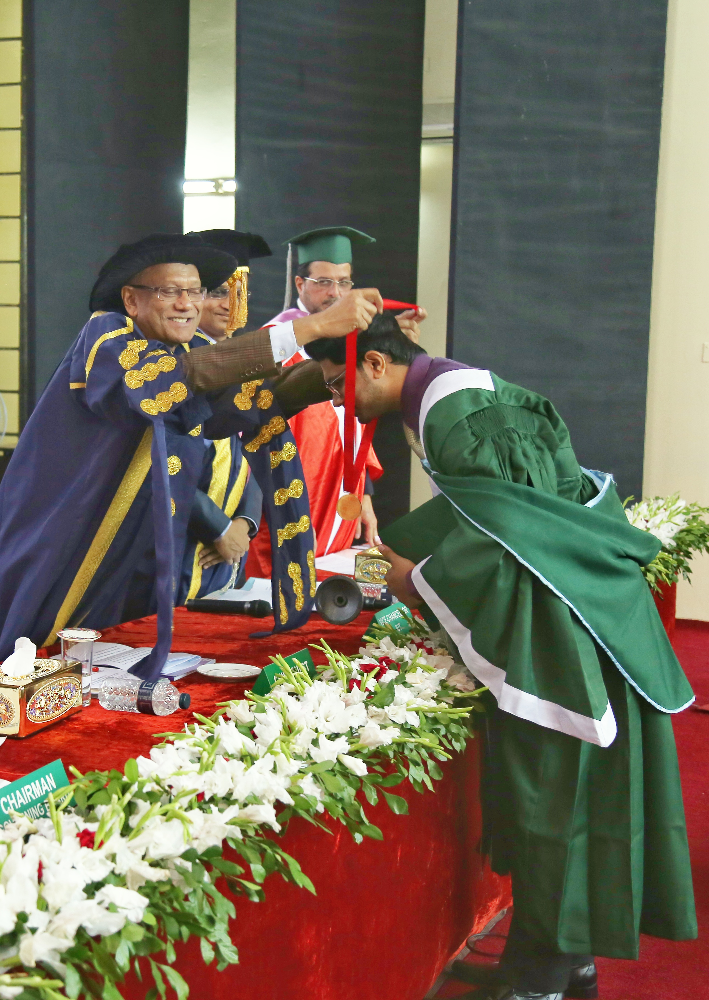
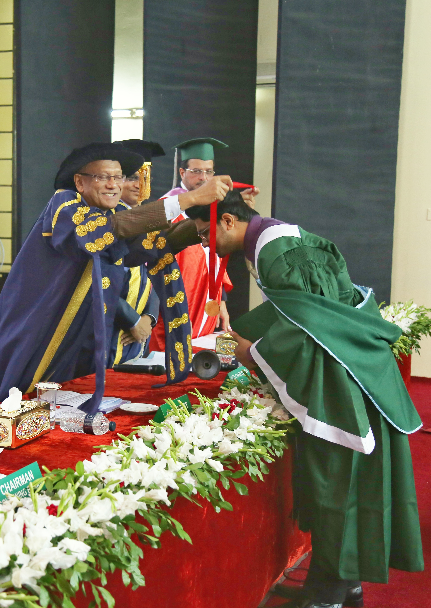

| Single‐shell NODDI using dictionary‐learner‐estimated isotropic volume fraction A Faiyaz, M Doyley, G Schifitto, J Zhong, MN Uddin NMR in Biomedicine 35 (2), e4628, 2022 | 9* | 2022 |
| Fixel-Based Analysis and Free Water Corrected DTI Evaluation of HIV Associated Neurocognitive Disorders A Finkelstein, A Faiyaz, MT Weber, X Qiu, MN Uddin, J Zhong, G Schifitto Frontiers in Neurology; https://doi.org/10.3389/fneur.2021.725059, 2021 | 7 | 2021 |
| A longitudinal analysis of brain extracellular free water in HIV infected individuals MN Uddin, A Faiyaz, L Wang, Y Zhuang, KD Murray, M Descoteaux, ... Scientific Reports 11 (1), 8273, 2021 | 7 | 2021 |
| Validation of deep learning techniques for quality augmentation in diffusion MRI for clinical studies S Aja-Fernández, C Martín-Martín, Á Planchuelo-Gómez, A Faiyaz, ... NeuroImage: Clinical 39, 103483, 2023 | 6 | 2023 |
| Natriuretic peptide receptor 2 locus contributes to carotid remodeling VA Korshunov, EM Smolock, ME Wines‐Samuelson, A Faiyaz, ... Journal of the American Heart Association 9 (10), e014257, 2020 | 4 | 2020 |
| Strain‐selective efficacy of sacubitril/valsartan on carotid fibrosis in response to injury in two inbred mouse strains VA Korshunov, B Quinn, A Faiyaz, R Ahmed, MP Sowden, MM Doyley, ... British journal of pharmacology 176 (15), 2795-2807, 2019 | 4 | 2019 |
| Angular upsampling in diffusion MRI using contextual HemiHex sub-sampling in q-space A Faiyaz, MN Uddin, G Schifitto arXiv preprint arXiv:2211.00240, 2022 | 2 | 2022 |
| Artificial intelligence for diffusion MRI-based tissue microstructure estimation in the human brain: an overview A Faiyaz, MM Doyley, G Schifitto, MN Uddin Frontiers in Neurology 14, 1168833, 2023 | 1 | 2023 |
| Preliminary MR elastography investigation on HIV+ cohort with cerebral small vessel disease A Faiyaz, IE Kabir, MM Doyley, I Sack, MN Uddin, G Schifitto Proc. Intl. Soc. Mag. Reson. Med. 30, 2021 | 1* | 2021 |
| Evaluation of White Matter Microstructure in an HIV Population at Risk of Cerebral Small Vessel Disease using Microscopic Fractional Anisotropy MN Uddin, A Faiyaz, G Schifitto Proc. Intl. Soc. Mag. Reson. Med. 30, 2021 | 1 | 2021 |
| Relationship between Free Water and Neuroinflammation/Neurodegeneration Markers in HIV Before and After Combination Antiretroviral Therapy MN Uddin, A Faiyaz, Y Zhuang, M Tivarus, J Zhong, M Descoteaux, ... Proc. Intl. Soc. Mag. Reson. Med. 29, 2020 | 1 | 2020 |
| Myelin Water Imaging in an HIV Population at Risk of Cerebral Small Vessel Disease MN Uddin, A Faiyaz, A Finkelstein, G Schifitto Proc. Intl. Soc. Mag. Reson. Med. 31, 2022 | | 2022 |
| BayesTract: Automated machine learning based brain artery segmentation, anatomical prior annotation and feature-extraction in MR Angiography A Faiyaz, N Hoang, A Finkelstein, J Zhong, M Doyley, H Wang, MN Uddin, ... Proc. Intl. Soc. Mag. Reson. Med. 31, 2022 | | 2022 |
| Machine Learning Classification of HIV Associated Neurocognitive Disorders (HAND) Based on Fiber Specific White Matter Change A Finkelstein, A Faiyaz, MN Uddin, J Zhong, G Schifitto 27th Annual Meeting of the Organization for Human Brain Mapping, 2021 | | 2021 |
| Deep Learner estimated isotropic volume fraction enables reliable single-shell NODDI reconstruction A Faiyaz, MM Doyley, G Schifitto, J Zhong, MN Uddin Proc. Intl. Soc. Mag. Reson. Med. 30, 2021 | | 2021 |
| Deep Learner estimated isotropic volume fraction enables reliable single-shell NODDI reconstruction A Faiyaz, MM Doyley, G Schifitto, J Zhong, MN Uddin Proc. Intl. Soc. Mag. Reson. Med. 30, 2021 | | 2021 |
| Elastic Modulus Quantification from Strain Elastograms: Progress Towards a Low Cost Alternative to Shear Wave Elastography T Diba, A Faiyaz, N Akhlagi, M Doyley, SK Alam, J Zara, B Garra Journal of Ultrasound in Medicine 39 (S1), S26-S31, https://doi.org/10.1002 …, 2020 | | 2020 |
| Effect of free water correction in grey and white matter in cART treated HIV patients A Faiyaz, Y Zhuang, M Doyley, J Zhong, M Descoteaux, U MN, G Schifitto 26th Annual Meeting of the Organization for Human Brain Mapping, 2020 | | 2020 |
| Tract-Based Spatial Statistics of Cerebral Small Vessel Disease in an HIV Population K Murray, A Faiyaz, B Sahin, M Tivarus, MN Uddin, A Venkataraman, ... 26th Annual Meeting of the Organization for Human Brain Mapping, 2020 | | 2020 |
| Strain Estimation and Detection of Cancerous Breast Lesion through ultrasound image A Faiyaz, M Anan, S Bashar Department of CSE, Islamic University of Technology, 2016 | | 2016 |
 
